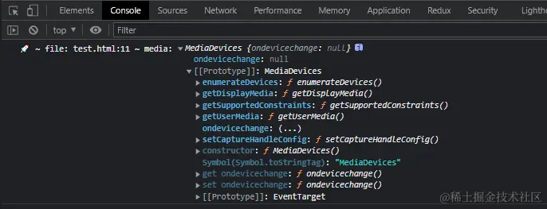
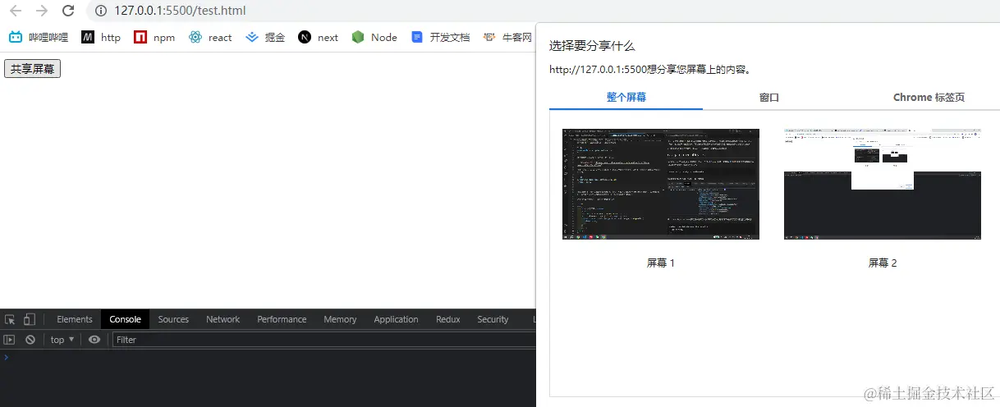
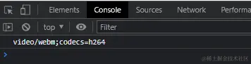
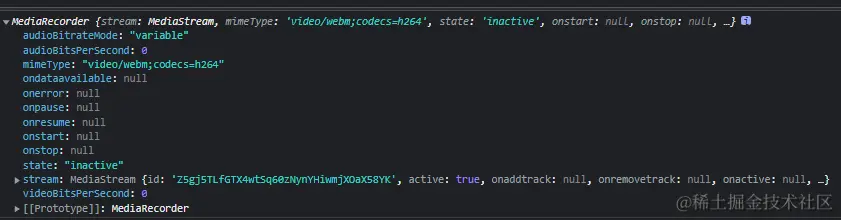
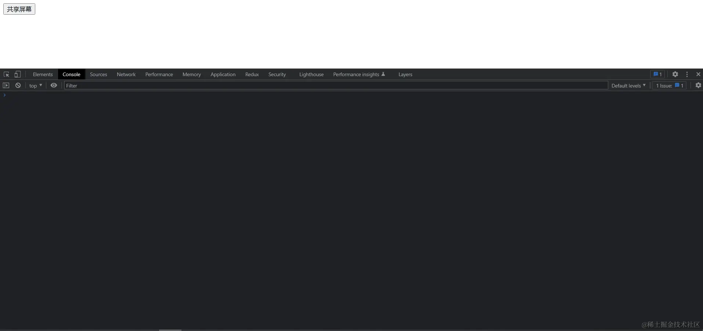

mediaDevices 是 Navigator 只读属性，返回一个 MediaDevices 对象，该对象可提供对相机和麦克风等媒体输入设备的连接访问，也包括屏幕共享。
const media = navigator.mediaDevices;
通过原型链可以查找到一些方法，如下图所示：

其中 getDisplayMedia 方法来获取用户的屏幕分享或屏幕捕获流，通常用于制作屏幕录像或视频会议等应用。
navigator.mediaDevices.getDisplayMedia({
video: true,
});
在这段代码中，请求获取包含视频流的媒体许可，并将其存储在名为 stream 的变量中，以便后续使用。这个流可以用于在网页上显示屏幕共享或进行其他媒体处理操作。
又因为该方法是异步的，我们要编写如下代码：
<body>
<button>共享屏幕</button>
<script>
const button = document.querySelector("button");
button.addEventListener("click", async () => {
const stream = await navigator.mediaDevices.getDisplayMedia({
video: true,
});
});
</script>
</body>
通过点击 button 按钮后会如下图所示效果：

这个时候 stream 流我们是拿到了。
MediaRecorder 是一个 Web API，用于在浏览器中进行媒体录制，主要用于录制音频和视频。它允许你从不同的来源，例如麦克风、摄像头、屏幕共享或其他媒体元素，捕获音频和视频数据，并将其保存为文件或进行实时流媒体传输。
通过调用 MediaRecorder.isTypeSupported() 方法会判断其 MIME 格式能否被客户端录制。它支持的类型主要有以下几种方式：
const types = [
"video/webm",
"audio/webm",
"video/webm;codecs=vp8",
"video/webm;codecs=daala",
"video/webm;codecs=h264",
"audio/webm;codecs=opus",
"video/mpeg",
];
通过这种方式来查看当前浏览器是否支持该类型,如下代码所示:
const mime = MediaRecorder.isTypeSupported("video/webm;codecs=h264")
? "video/webm;codecs=h264"
: "video/webm";
结果如下图所示:

const mediaRecorder = new MediaRecorder(stream, { mimeType: mime });
在这段代码里面，执行 new 关键字实例化 MediaRecorder 对象。该对象的结构如下图所示：

我们可以通过监听它的事件来进行不同的操作,如下代码所示：
const chunks = [];
mediaRecorder.addEventListener("dataavailable", function (e) {
chunks.push(e.data);
});
mediaRecorder.addEventListener("stop", () => {
const blob = new Blob(chunks, { type: chunks[0].type });
const url = URL.createObjectURL(blob);
const a = document.createElement("a");
a.href = url;
a.download = "video.webm";
a.click();
});
接下来我们来看看段代码的详细步骤:
dataavailable 事件的监听器。当 MediaRecorder 有可用的音频/视频数据块时，它会触发此事件。在这里，每当数据可用时，将数据块（e.data）添加到 chunks 数组中。这是为了在录制完成后将这些数据块合并成一个完整的媒体文件。
stop 事件的监听器。当录制停止时，MediaRecorder 会触发此事件。
const blob = new Blob(chunks, { type: chunks[0].type });：使用 Blob 构造函数将 chunks 数组中的数据块合并成一个二进制对象（Blob 对象）。chunks[0].type 用于指定 Blob 的媒体类型，通常是 WebM。
const url = URL.createObjectURL(blob);：使用 URL.createObjectURL 方法将 Blob 对象转换为一个临时 URL。这个 URL 可以用于创建下载链接。通过这个 url 传递给新创建的 a 元素用于下载功能。
a.click() 通过模拟点击超链接来触发下载操作。用户将看到一个下载对话框，允许他们保存录制的媒体文件
这样就实现了一个屏幕录制功能了，并且通过该方法实现了一个音视频下载的功能。
该功能的完整代码如下所示：
载的功能。 完整代码 该功能的完整代码如下所示： html复制代码<!DOCTYPE html>
<html lang="en">
<head>
<meta charset="UTF-8" />
<meta name="viewport" content="width=device-width, initial-scale=1.0" />
<title>Document</title>
</head>
<body>
<button>共享屏幕</button>
<script>
const button = document.querySelector("button");
button.addEventListener("click", async () => {
const stream = await navigator.mediaDevices.getDisplayMedia({
video: true,
});
const mime = MediaRecorder.isTypeSupported("video/webm;codecs=h264")
? "video/webm;codecs=h264"
: "video/webm";
const mediaRecorder = new MediaRecorder(stream, { mimeType: mime });
const chunks = [];
mediaRecorder.addEventListener("dataavailable", function (e) {
chunks.push(e.data);
});
mediaRecorder.addEventListener("stop", () => {
const blob = new Blob(chunks, { type: chunks[0].type });
const url = URL.createObjectURL(blob);
const a = document.createElement("a");
a.href = url;
a.download = "video.webm";
a.click();
});
mediaRecorder.start();
});
</script>
</body>
</html>
完整效果如下图所示:
